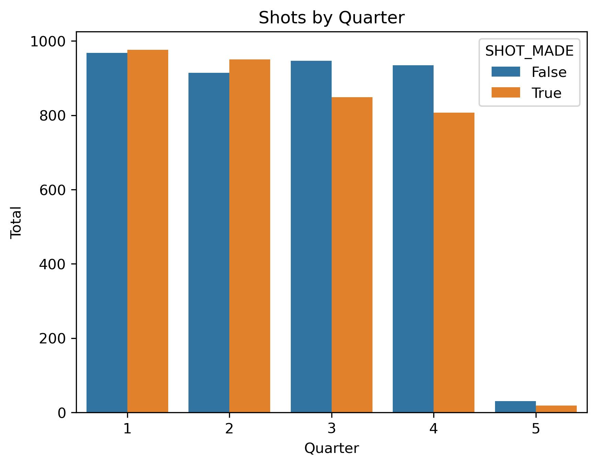
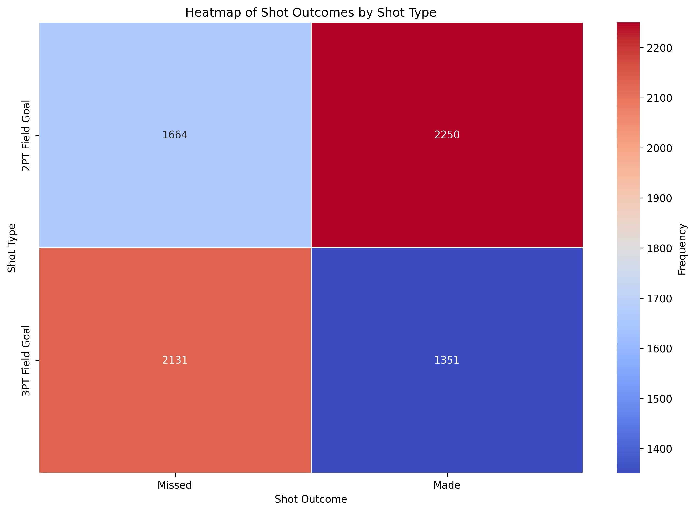

Analyzing Celtics Shot Statistics
Shot Frequency by Distance

This is a graph representing the amount of made and missed shots by the Celtics in the 2024 season. On the x-axis is ‘Made/Missed,’ and on the y-axis is the amount of shots. This was our introductory analysis to visualize the Celtic’s overall shooting percentage as a team by comparing the proportion of made shots to missed shots. As we can see, the Celtics overall shooting percentage was less than 50%, as the bar for made shots is less than the bar for missed shots.
Scoring Efficiency Analysis
This visualization is a line graph which compares the total number of points scored from 2-point shots and the total number of points scored from 3-point shots by the Celtics on the occasion of various games. We have included an interactive feature which allows the user to drag and select the timespan (range of months) for which they would like to analyze the scoring breakdown of games. On the x-axis is date (month) and on the y-axis is points. There are two lines displayed, the blue line representing the points from 2-point shots across various games, and the orange line representing the points from 3-point shots across various games. There is also a tooltip where you can click on a point on the graph on either line, and it will tell you the specific date of when the game was played, as well as the number of points accumulated from that shot type. Using this visualization, you can choose a certain time frame during the season and compare how much contribution 3-pointers had towards games versus 2-pointers. Tracking this allows us to continuously monitor and understand the efficacy of the Celtics’ shot selection strategy.
Celtics Shot Distribution
This interactive bar chart shows the distribution of shots taken by Celtics players across different zones on the court. It allows users to explore player-specific shot patterns and performance trends.
Shot Distance Variation by Quarter
This fourth visualization is a boxplot that analyzes the variation in shot distances for the Celtics across all quarters of play, broken down by whether the shots were made or missed. The x-axis represents the quarters, including overtime, while the y-axis shows the shot distances in feet. For each quarter, the red boxplots represent missed shots, and the blue boxplots represent made shots. From this visualization, we can observe that missed shots consistently show a wider range of distances compared to made shots, particularly with notable outliers in quarters 1, 2, and overtime. These outliers indicate instances of long-distance attempts, likely desperation or buzzer-beater shots, that are far less likely to succeed. Conversely, made shots are more tightly grouped closer to the basket, highlighting the team’s strength in higher-percentage close-range attempts. Interestingly, as the game progresses into later quarters, there is a slight narrowing in the range of made shots, suggesting the Celtics may focus more on closer, higher-percentage attempts in critical moments of the game. However, the widening range of missed shots in these quarters could reflect fatigue or increased defensive pressure from opposing teams. This visualization provides valuable insight into how shot selection evolves throughout a game and underscores the importance of maintaining efficiency in shot attempts, particularly in later quarters.
Shot Type by Outcome
This heatmap provides a detailed analysis of the relationship between shot type (2-point versus 3-point field goals) and shot outcome (made or missed) for the Celtics. The x-axis categorizes the outcomes into “Missed” and “Made,” while the y-axis differentiates between the two shot types. The heatmap uses color intensity to represent the frequency of occurrences, with blue indicating lower frequencies and red indicating higher frequencies. From this visualization, we can observe that made 2-point field goals are the most frequent (deep red cell), underscoring the Celtics’ effectiveness in close-range shots. In contrast, missed 3-point field goals (orange-red cell) are nearly as frequent, reflecting the team’s heavy reliance on long-range shooting—a defining characteristic of modern basketball strategy. The relatively lower frequency of made 3-point field goals (dark blue cell) highlights the inherent challenge of converting these high-risk, high-reward attempts. The data suggests that while the Celtics excel in converting 2-point field goals, their high volume of missed 3-point attempts may reduce overall scoring efficiency. This visualization emphasizes the importance of balancing shot selection to maximize scoring potential, suggesting a potential shift toward more consistent 2-point opportunities, especially in critical game situations.
Analyzing Player Performance
Shot Chart of 10 Players
This visualization provides an interactive interface where the user can select different players on the Celtics roster and analyze where on the court that player had missed and made shots during each quarter. This allows the user to understand a variety of different factors, such as where a particular player’s hotspots and coldspots are on the court, how a players’ play-style and performance changes by quarter, and how their activity compares to other players on the team. The x-axis represents horizontal position on the court and the y-axis represents vertical position on the court. The user can toggle between made, missed, or both, and mix that with a toggled view of either first, second, third, fourth, overtime, or all quarters. This is a powerful visualization that helps us visually understand what a player is doing on the court. For example, we can select Sam Hauser as our player of interest, set the shot type button to ‘both,’ and select ‘fourth quarter.’ From this, the user would be able to see that in the fourth quarter, Sam Hauser is brought in to shoot primarily three-point shots, of which he is strongest from the left corner and the right wing, although overall his proportion of missed three-pointers is significantly greater than his proportion of made three-pointers.
Player Shot Frequency and Success

This bar graph helps us compare the number of missed and made shots by players on the Celtic’s roster. On the y-axis are the names of various players on the Celtic’s roster, and on the x-axis is the number of shots. The purpose of this visualization was to give us insight into the Celtic’s offensive distribution strategy, helping us understand which player’s get more ball time and which get less. This can help us understand if the amount of ball time being given to a player is worth it in terms of their efficacy. From the visualization, we can see that Jayson Tatum is by far the player on the team with the most ball time, as he has the highest number of attempted shots. Of his attempted shots, we can see that he has quite a higher proportion of missed shots compared to made shots. In comparison, his runner-up in ball time, Jaylen Brown, has much less attempted shots than Jayson Tatum, but his ratio of missed-to-made shots is almost exactly equal, meaning that although he takes less shots than Tatum, Brown is much more effective with his shots. This proposes the recommendation to make an adjustment to the team’s offensive strategy: reduce some of the attention being given to Tatum and redirect it to Brown, the more efficient shot-taker. By allowing us to compare the efficacy of players in their shot-taking, this bar graph helps us make strategic recommendations towards the team’s offensive strategy.